%config InlineBackend.figure_format = 'retina'
# libraries
from scipy.stats import binom
import arviz as az
import matplotlib.pyplot as plt
import numpy as np
import pandas as pd
import pymc as pm
import pymc_extras as pmx
import seaborn as sns
# only necessary on MacOS Sequoia
# https://discourse.pymc.io/t/pytensor-fails-to-compile-model-after-upgrading-to-mac-os-15-4/16796/5
import pytensor
pytensor.config.cxx = '/usr/bin/clang++'
# plotting parameters
plt.style.use('fivethirtyeight')
plt.rcParams['axes.facecolor'] = 'white'
plt.rcParams['figure.facecolor'] = 'white'
plt.rcParams['axes.spines.left'] = False
plt.rcParams['axes.spines.right'] = False
plt.rcParams['axes.spines.top'] = False
plt.rcParams['axes.spines.bottom'] = False
sns.set_palette("tab10")
# hyperparameters
SEED = 808
RNG = np.random.default_rng(SEED)Closed capture-recapture
Estimating abundance with capture-recapture models in PyMC
In this notebook, I explore fitting closed population capture-recapture models in PyMC. Capture-recapture, at least the Lincoln-Peterson estimator, has been around for almost 100 years. Since then, countless varieties of capture-recapture models have been developed for closed populations (Otis et al. 1978).
The basic steps in capture-recapture are: capture several individuals–e.g., via trapping–from the population of interest, mark these animals, then release them. We repeat this process several times, each time noting when we recapture individuals.
| Individual | \(t_1\) | \(t_2\) | \(t_3\) | \(t_4\) |
|---|---|---|---|---|
| 001 | 1 | 1 | 0 | 1 |
| 002 | 0 | 1 | 1 | 1 |
| 003 | 0 | 0 | 1 | 1 |
This produces a capture history for each individual, which allows us to estimate the probability of capture and the number of individuals in the population \(N\).
Salamander Example
I use the salamander dataset from Bailey, Simons, and Pollock (2004), as demonstrated in Hooten and Hefley (2019), Chapter 24. These data were collected on two salamander species, the red-cheeked salamander (Plethodon jordani) and the pygmy salamander (Desmognathus wrighti), in Great Smoky Mountains National Park. The salamanders were counted in 15m by 15m square plots. There were \(n=92\) individual red-cheeked and \(n=132\) pygmy salamanders captured during the course of the survey.
Model \(M_0\)
I explore fitting the simplest closed capture-recapture model, Model \(M_0,\) through parameter-expanded data-augmentation (PX-DA, Royle and Dorazio 2008). The idea with PX-DA is to augment the capture histories with \(M-n\) all zero capture-histories, where \(M\) is a hyperparameter that should be much greater than the true population size \(N,\) and \(n\) is the total number of individuals that were captured during the study. This allows us to treat the data as a zero-inflated binomial distribution (see below). In this case, we augment the history by setting \(M=1500\)
def augment_history(history, M):
'''Augment a capture history with all-zero histories.'''
animals_captured, T = history.shape
# create M - n all zero histories
zero_history_count = M - animals_captured
zero_history = np.zeros((zero_history_count, T))
# tack those on to the capture history
augmented = np.vstack((history, zero_history))
return augmented
def get_histories():
'''Read, augment, and recombine the salamander histories.'''
# read in salamander data
sal_data = pd.read_csv('sal_data.csv')
# labels for capture history columns
col_labs = [f'y{t}' for t in range(1, 5)]
# subset each dataset before augmenting
is_pyg = sal_data.spp == 1
is_red = sal_data.spp == 0
pyg = sal_data.loc[is_pyg, col_labs].to_numpy()
red = sal_data.loc[is_red, col_labs].to_numpy()
return {'pyg': pyg, 'red': red}
def augment_histories(histories, M):
pyg_augmented = augment_history(histories['pyg'], M=M)
red_augmented = augment_history(histories['red'], M=M)
# recombine into one history
history = np.concatenate((pyg_augmented, red_augmented))
return history
histories = get_histories()
n_red, T = histories['red'].shape
n_pyg, T = histories['pyg'].shape
# # summarize into binomial data
M = 1500
history_augmented = augment_histories(histories, M=M)
history_summarized = history_augmented.sum(axis=1)For this model, I use the pm.ZeroInflatedBinomial class, just as I did in the occupancy notebook. That said, the parameters here are different. First, \(p\) represents the probability of capturing a given individual during the survey. Second, \(\psi\) represents a mysterious entity known as the inclusion probability. That is, the probability that an individual from the hypothetical superpopulation \(M\) is included in the population of interest \(N.\) Then, we can simulate the posterior distribution for \(N\) using \(M\) and the posterior distributions of \(\psi.\)
In this example, I combine the two species into one pm.Model object, making use of coords. That said, the parameters for each species are treated as independent. In other words, this is a “no-pooling” model.
# index for each species
species_idx = np.repeat([0, 1], M)
# coordinates identifying parameter each species
coords = {'species': ['pygmy', 'red_cheeked']}
with pm.Model(coords=coords) as M0:
# priors for the capture and inclusion probabilities
psi = pm.Beta('psi', 0.001, 1, dims='species')
p = pm.Uniform('p', 0, 1, dims='species')
# likelihood for the summarized data
pm.ZeroInflatedBinomial(
'history',
p=p[species_idx],
psi=psi[species_idx],
n=T,
observed=history_summarized
)
pm.model_to_graphviz(M0)
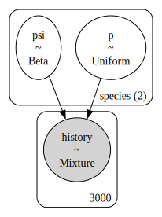
MarginalMixture refers to the zero-inflated binomial distribution.
with M0:
M0_idata = pm.sample()Initializing NUTS using jitter+adapt_diag...
Multiprocess sampling (4 chains in 4 jobs)
NUTS: [psi, p]Sampling 4 chains for 1_000 tune and 1_000 draw iterations (4_000 + 4_000 draws total) took 6 seconds.ax = az.plot_trace(M0_idata, figsize=(8,4), var_names=['psi', 'p']);
plt.subplots_adjust(hspace=0.4)
For faster sampling, it’s better to separate the two species into two separate models. On my machine, the individual species models finish sampling in 2-3 seconds, compared to 15-20 seconds for the two species model. That said, the two species model is somewhat more convenient.
Of course, the trace plots lack our true parameter of interest: the population size \(N.\) We can simulate the posterior of \(N\) as a derived quantity, using \(M\) and the posterior distribution of \(\psi\).
# az.extract flattens the chains
posterior = az.extract(M0_idata)
psi_samps = posterior.psi.values
p_samps = posterior.p.values
# posterior probabilities of being present in the population but not detected
p_if_present = psi_samps * binom.pmf(0, n=T, p=p_samps)
p_total = p_if_present + (1 - psi_samps)
# simulate the number of undetected animals in each population
number_undetected_pyg = RNG.binomial(M - n_pyg, p_if_present[0] / p_total[0])
number_undetected_red = RNG.binomial(M - n_red, p_if_present[1] / p_total[1])
# simulate N
N_pyg = n_pyg + number_undetected_pyg
N_red = n_red + number_undetected_redBelow I plotted the posterior distributions of \(N\) for both species, adding the estimates from Hooten and Hefley (2019), Chapter 24. Although note that they used a different prior for \(\psi.\)
N_hooten = [229.6, 450.9]
fig, ax = plt.subplots(figsize=(6,4))
ax.hist(N_pyg, color='C0', edgecolor='white', alpha=0.9, bins=30, label='Pygmy')
ax.hist(N_red, color='C1', edgecolor='white', alpha=0.9, bins=30, label='Red-cheeked')
ax.axvline(N_hooten[0], linestyle='--', color='black', linewidth=2)
ax.axvline(N_hooten[1], linestyle='--', color='black', linewidth=2)
ax.set_title('Posterior distributions of $N$')
ax.set_ylabel('Number of samples')
ax.legend()
plt.show()
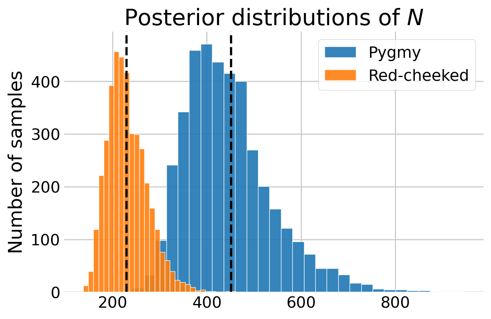
We might expect estimates of capture probability \(p\) and the abundance \(N\) to be somewhat correlated. We can explore this relationship visually by plotting the posterior draws.
# create the plot
fig, ax = plt.subplots(1, 1, figsize=(4, 4))
# add the scatter for each species
labs = ['Pygmy', 'Red-backed']
ax.scatter(p_samps[0], N_pyg, s=10, alpha=0.2, label=labs[0])
ax.scatter(p_samps[1], N_red, s=10, alpha=0.2, label=labs[1])
# this removes the opacity for the dots in the legend
leg = ax.legend()
for lh in leg.legend_handles:
lh.set(sizes=[25], alpha=[1])
# update aesthetics
ax.spines.right.set_visible(False)
ax.spines.top.set_visible(False)
ax.set_ylabel(r'$N$')
ax.set_xlabel(r'$p$')
ax.set_title('Posterior draws')
plt.show()
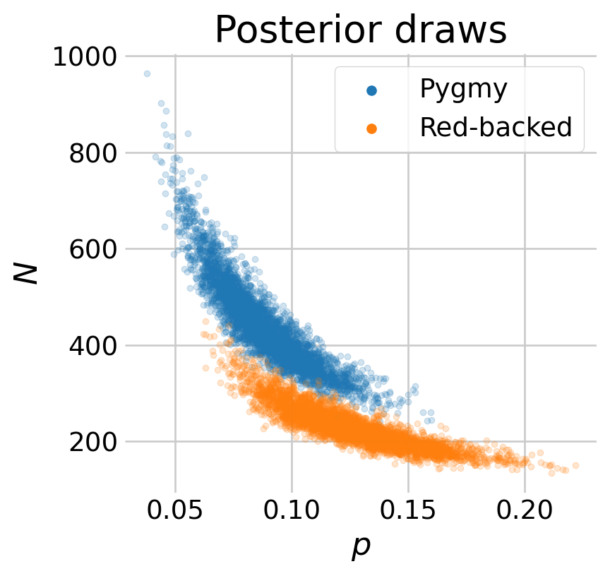
Mircotus Example
Mirroring (Royle and Dorazio 2008, chap. 5), I fit the next set of models to the Microtus dataset reported in (Williams, Nichols, and Conroy 2002, 525). This version of the dataset includes encounter histories of \(n=56\) adult males that were captured on \(T=5\) consecutive days.
Model \(M_b\)
Next, I fit model \(M_b,\) which accounts for the possibility that the capture probability changes after the animal is first caught. This could be from trap happiness, whereby animals are more likely to be trapped after their first time. Conversely, this could be from subsequent trap avoidance.
# read in the microtus data
microtus = np.loadtxt('microtus.data.txt').astype(int)
# the last column is not relevant
micro_hist = microtus[:,:-1]
n, T = micro_hist.shape
# augment with all zero histories
M = 100
micro_augmented = augment_history(micro_hist, M=M)
# note the occasion when each individual was first seen
first_seen = (micro_hist != 0).argmax(axis=1)
# create the covariate for the behavior effect
behavior_effect = np.zeros((M, T))
for i, f in enumerate(first_seen):
behavior_effect[i, (f + 1):] = 1
# covariate matrix
x_int = np.ones((M, T))
X = np.stack((x_int, behavior_effect), axis=2)Just like in the occupancy notebook, the detection probability will now be a matrix, i.e., it depends on the individual and the occasion. As such, we can no longer rely on pm.ZeroInflatedBinomial. Again, just like the occupancy notebook, we will write the model in terms of the latent \(z_i\) state, then marginalize it out with pymc_extras.marginalize().
coords = {'alpha_coeffs': ['Intercept', 'B_Response']}
with pm.Model(coords=coords) as mb:
# priors for the capture and inclusion probabilities
psi = pm.Beta('psi', 0.001, 1)
Alpha = pm.Normal('Alpha', 0, 2, dims='alpha_coeffs')
# linear model for the capture probability
nu = pm.math.dot(X, Alpha)
p = pm.Deterministic('p', pm.math.invlogit(nu))
# included / excluded state
z = pm.Bernoulli('z', psi, shape=M)
# likelihood for detection given inclusion
mu_y = z[:, None] * p
pm.Bernoulli('y', mu_y, observed=micro_augmented)
pm.model_to_graphviz(mb)
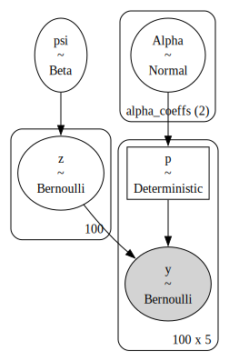
mb_marginal = pmx.marginalize(mb, ['z'])
with mb_marginal:
mb_idata = pm.sample()Initializing NUTS using jitter+adapt_diag...
Multiprocess sampling (4 chains in 4 jobs)
NUTS: [psi, Alpha]Sampling 4 chains for 1_000 tune and 1_000 draw iterations (4_000 + 4_000 draws total) took 1 seconds.az.summary(mb_idata, var_names=['Alpha', 'psi'])| mean | sd | hdi_3% | hdi_97% | mcse_mean | mcse_sd | ess_bulk | ess_tail | r_hat | |
|---|---|---|---|---|---|---|---|---|---|
| Alpha[Intercept] | 0.115 | 0.240 | -0.358 | 0.546 | 0.005 | 0.004 | 1913.0 | 2093.0 | 1.0 |
| Alpha[B_Response] | 0.612 | 0.285 | 0.042 | 1.112 | 0.007 | 0.004 | 1816.0 | 2058.0 | 1.0 |
| psi | 0.569 | 0.053 | 0.466 | 0.664 | 0.001 | 0.001 | 2357.0 | 2092.0 | 1.0 |
az.plot_forest(mb_idata, var_names=['Alpha'], combined=True, ess=True, figsize=(6,2));
The forest plot indicates that there is some evidence of a weak, positive behavioral response. Although note that the 94% credible intervals between the baseline capture rate and the behavioral effect overlap considerably.
idata = pmx.recover_marginals(mb_marginal, mb_idata);
N_hat = az.extract(idata).z.sum(dim='z_dim_0')
# bar plot looks a little better than a histogram here imo
N_values, N_counts = np.unique(N_hat, return_counts=True)
N_countsarray([1187, 1130, 801, 441, 212, 99, 58, 36, 17, 8, 5,
1, 1, 2, 1, 1])# # simulate draws of N
idata = pmx.recover_marginals(mb_marginal, mb_idata);
N_hat = az.extract(idata).z.sum(dim='z_dim_0')
# create the plot
fig, ax = plt.subplots(figsize=(4, 3))
# bar plot looks a little better than a histogram here imo
N_values, N_counts = np.unique(N_hat, return_counts=True)
ax.bar(N_values, N_counts)
ax.annotate(
'Number\ndetected $n$',
ha='left',
xy=(N_values[0], N_counts[0]),
color='black',
xytext=(n+5, 700),
arrowprops=dict(arrowstyle="->", color='black', linewidth=1,
connectionstyle="angle3,angleA=90,angleB=0")
)
# ax.ticklabel_format(axis='y', style='sci', scilimits=(0,0))
ax.set_ylabel('Number of samples')
ax.set_title('Posterior of $N$')
plt.show()
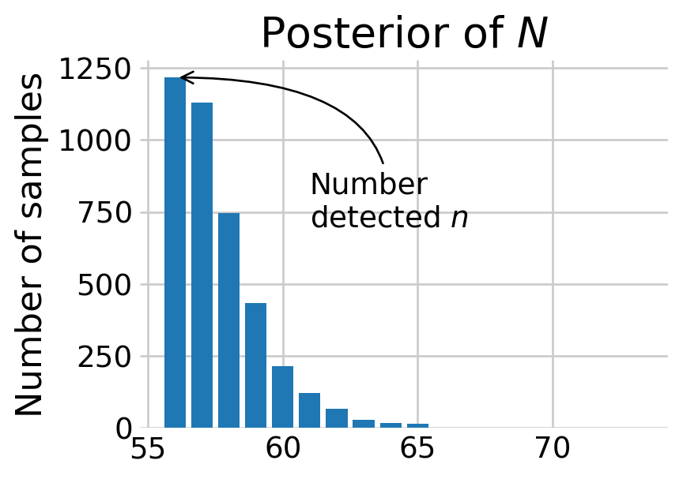
Most of the posterior density of \(N\) is at \(n,\) the number of animals detected. The discovery curve hints at why this may be the case. It seems that all the voles in the population may have been captured by the end of the study.
# how many voles have been seen?
total_seen = micro_hist.sum(axis=0).cumsum()
total_seen = np.insert(total_seen, 0, 0)
# how many new voles have been seen?
first_seen = (micro_hist != 0).argmax(axis=1)
newbies = [sum(first_seen == t) for t in range(T)]
total_newbies = np.cumsum(newbies)
total_newbies = np.insert(total_newbies, 0, 0)
fig, ax = plt.subplots(figsize=(5, 3.5))
ax.plot(total_seen, total_newbies)
ax.fill_between(total_seen, total_newbies, alpha=0.2)
ax.set_title('Discovery curve')
ax.set_xlabel('Total voles captured')
ax.set_ylabel('Unique voles captured')
plt.show()
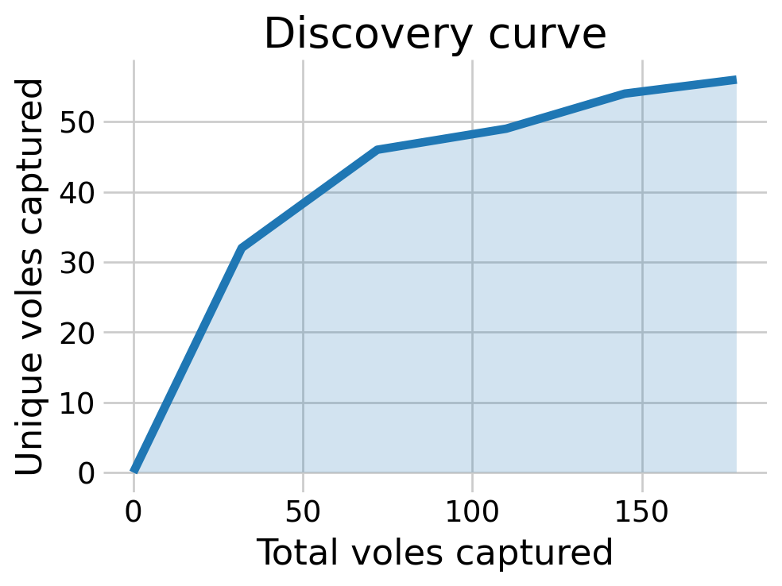
We can also look at the behavioral effect by visualizing the posterior distributions of \(p.\) As we can see, the voles who have been captured before are more likely to be captured again.
p_samps = az.extract(mb_idata).p.values
first_detection = X[:, :, 1] == 0
p_first_detection = p_samps[first_detection].flatten()
p_seen_before = p_samps[~first_detection].flatten()
fig, ax = plt.subplots(figsize=(5, 3.5))
az.plot_dist(p_first_detection, ax=ax, label='First detection', color='C0')
az.plot_dist(p_seen_before, ax=ax, label='Seen before', color='C1')
ax.set_title('Posterior distributions of $p$')
ax.set_xlim((0,1))
ax.set_yticks([])
ax.legend()
plt.show()
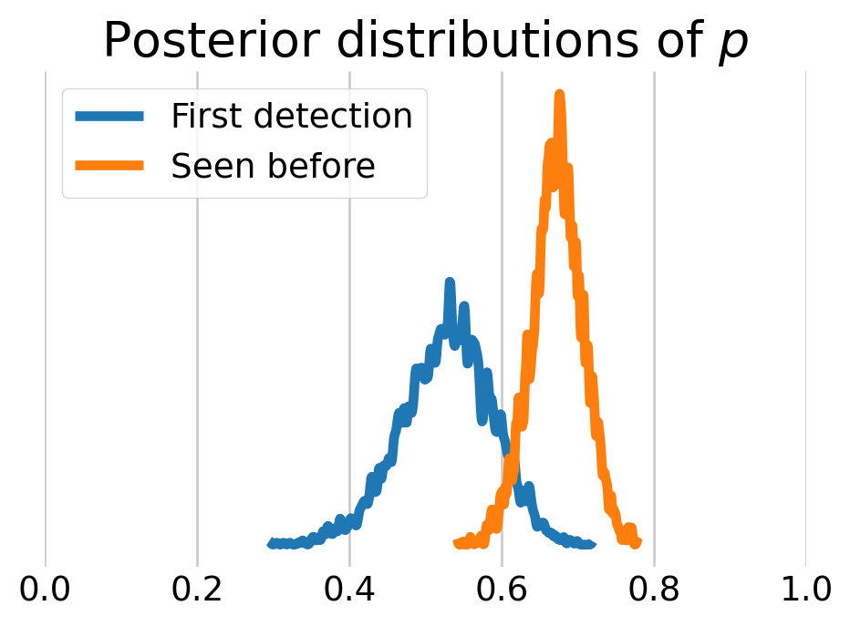
Model \(M_t\)
We can also look at time varying effects with model \(M_t.\)
coords = {'occasion': np.arange(T)}
with pm.Model(coords=coords) as mt:
# priors for the capture and inclusion probabilities
psi = pm.Beta('psi', 0.001, 1)
p = pm.Uniform('p', 0, 1, dims='occasion')
# included / excluded state
z = pm.Bernoulli('z', psi, shape=M)
# likelihood for detection given inclusion
mu_y = z[:, None] * p
pm.Bernoulli('y', mu_y, observed=micro_augmented)
pm.model_to_graphviz(mt)
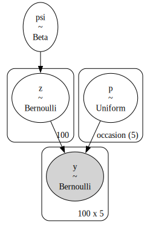
Broadcasting z across p, now that p is a vector, produces a matrix. The first row of this matrix, mu_y[0], contains the first value of the state variable, z[0], multiplied against every value of the detection probability vector p[0:T], i.e., p.
mt_marginal = pmx.marginalize(mt, ['z'])
with mt_marginal:
mt_idata = pm.sample()Initializing NUTS using jitter+adapt_diag...
Multiprocess sampling (4 chains in 4 jobs)
NUTS: [psi, p]Sampling 4 chains for 1_000 tune and 1_000 draw iterations (4_000 + 4_000 draws total) took 1 seconds.az.summary(mt_idata, var_names=['p', 'psi'])| mean | sd | hdi_3% | hdi_97% | mcse_mean | mcse_sd | ess_bulk | ess_tail | r_hat | |
|---|---|---|---|---|---|---|---|---|---|
| p[0] | 0.567 | 0.063 | 0.454 | 0.689 | 0.001 | 0.001 | 5875.0 | 3017.0 | 1.0 |
| p[1] | 0.703 | 0.059 | 0.591 | 0.809 | 0.001 | 0.001 | 4796.0 | 3169.0 | 1.0 |
| p[2] | 0.668 | 0.060 | 0.553 | 0.774 | 0.001 | 0.001 | 6695.0 | 3513.0 | 1.0 |
| p[3] | 0.617 | 0.062 | 0.501 | 0.736 | 0.001 | 0.001 | 5464.0 | 3396.0 | 1.0 |
| p[4] | 0.581 | 0.064 | 0.460 | 0.701 | 0.001 | 0.001 | 6317.0 | 3422.0 | 1.0 |
| psi | 0.557 | 0.050 | 0.466 | 0.655 | 0.001 | 0.001 | 5823.0 | 3267.0 | 1.0 |
az.plot_forest(mt_idata, var_names=['p'], combined=True, ess=True, figsize=(6,2));
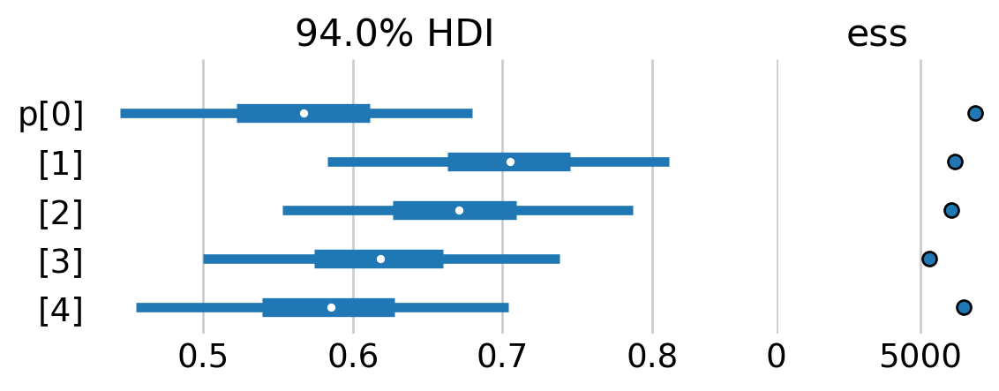
For the most part, it doesn’t look as if the detection prbobability varied dramatically across the study.
Model \(M_{h}\)
We can also model individual effects with model \(M_h\). Following this PyMC notebook, I use a bounded Pareto distribution, which goes on to inform the individual-level recapture probabilities, which are Beta-distributed. See their notebook for deatils.
coords = {'individual': np.arange(M)}
with pm.Model(coords=coords) as mh:
# priors for the capture and inclusion probabilities
psi = pm.Beta('psi', 0.001, 1)
# overall average
phi = pm.Uniform("phi", lower=0.0, upper=1.0)
# individual level variation
kappa_log = pm.Exponential("kappa_log", lam=1.5)
kappa = pm.Deterministic("kappa", pm.math.exp(kappa_log))
theta = pm.Beta("theta", alpha=phi * kappa, beta=(1.0 - phi) * kappa, dims="individual")
pm.ZeroInflatedBinomial(
'y',
p=theta,
psi=psi,
n=T,
observed=micro_augmented.sum(axis=1)
)
pm.model_to_graphviz(mh)
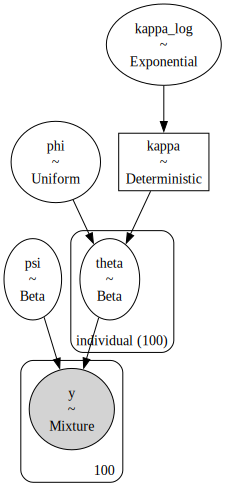
This model is a little trickier to fit than the models above. As such, I increased the number of tuning draws and post-tune draws to 2000. Moreover, I increased the target acceptance rate of the sampler to 0.95.
with mh:
mh_idata = pm.sample(tune=2000, draws=2000, target_accept=0.99)Initializing NUTS using jitter+adapt_diag...
Multiprocess sampling (4 chains in 4 jobs)
NUTS: [psi, phi, kappa_log, theta]Sampling 4 chains for 2_000 tune and 2_000 draw iterations (8_000 + 8_000 draws total) took 18 seconds.az.summary(mh_idata, var_names=['psi', 'phi', 'kappa'])| mean | sd | hdi_3% | hdi_97% | mcse_mean | mcse_sd | ess_bulk | ess_tail | r_hat | |
|---|---|---|---|---|---|---|---|---|---|
| psi | 0.722 | 0.099 | 0.548 | 0.923 | 0.003 | 0.002 | 929.0 | 1063.0 | 1.00 |
| phi | 0.493 | 0.075 | 0.350 | 0.625 | 0.003 | 0.001 | 890.0 | 1253.0 | 1.00 |
| kappa | 1.397 | 0.424 | 1.000 | 2.148 | 0.016 | 0.021 | 808.0 | 1318.0 | 1.01 |
ax = az.plot_trace(mh_idata, var_names=['psi', 'phi', 'kappa'])
plt.subplots_adjust(hspace=0.4)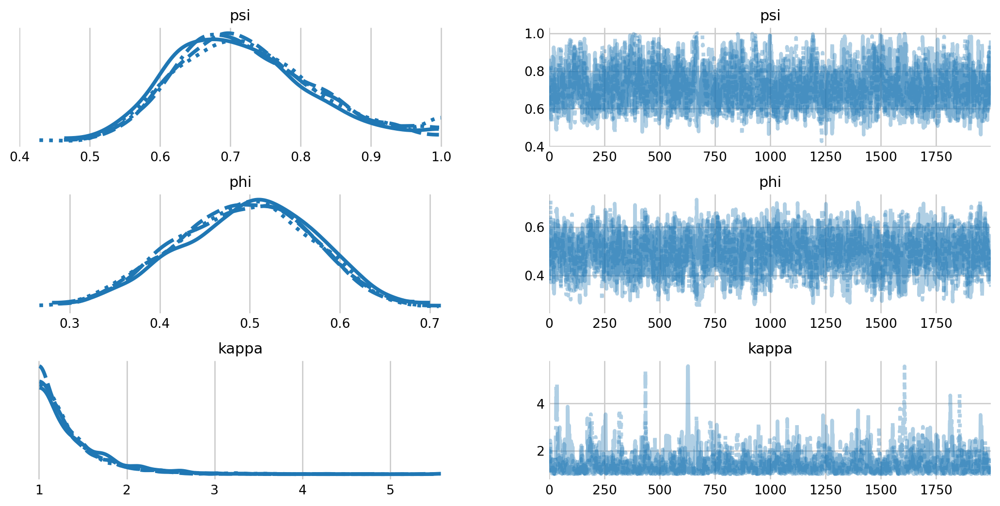
fig, axes = plt.subplots(1, 2, figsize=(7, 13), sharey=True)
az.plot_forest(mh_idata, var_names="theta", combined=True, ess=True, ax=axes,
coords={'individual': np.arange(50)});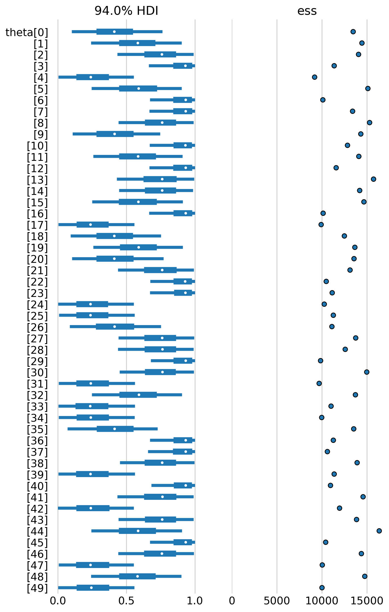
We see that there is notable variation in capture probability among individuals. Further, we see that the inclusion probability has increased considerable, with some samples near the boundary. If we were interested in this model, we would likely have to increase the number of augmented individuals in the analysis.
%load_ext watermark
%watermark -n -u -v -iv -wLast updated: Sun Nov 09 2025
Python implementation: CPython
Python version : 3.13.7
IPython version : 9.6.0
pymc_extras: 0.5.0
pytensor : 2.31.7
pymc : 5.25.1
seaborn : 0.13.2
numpy : 2.3.3
arviz : 0.22.0
pandas : 2.3.3
matplotlib : 3.10.6
Watermark: 2.5.0
References
Bailey, Larissa L, Theodore R Simons, and Kenneth H Pollock. 2004. “Estimating Detection Probability Parameters for Plethodon Salamanders Using the Robust Capture-Recapture Design.” The Journal of Wildlife Management 68 (1): 1–13.
Hooten, Mevin B, and Trevor Hefley. 2019. Bringing Bayesian Models to Life. CRC Press.
Otis, David L, Kenneth P Burnham, Gary C White, and David R Anderson. 1978. “Statistical Inference from Capture Data on Closed Animal Populations.” Wildlife Monographs, no. 62: 3–135.
Royle, J Andrew, and Robert M Dorazio. 2008. Hierarchical Modeling and Inference in Ecology: The Analysis of Data from Populations, Metapopulations and Communities. Elsevier.
Williams, Byron K, James D Nichols, and Michael J Conroy. 2002. Analysis and Management of Animal Populations. Academic press.